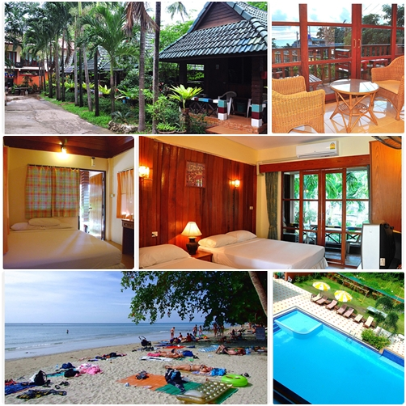
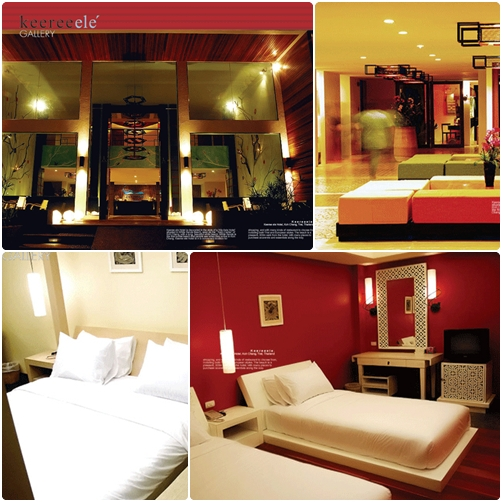
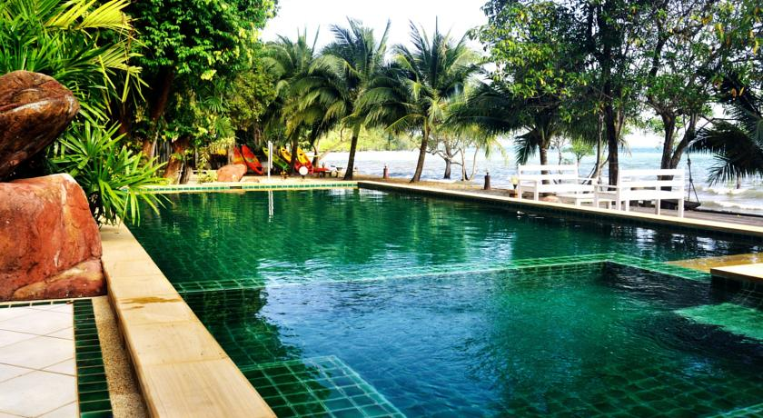

โรงแรม
โรงแรมที่พักแนะนำ เมื่อมาเยือนจังหวัดตราด
1.โรงแรมอลีนา รีสอร์ท
 รีสอร์ทขนาดเล็กสไตล์แมนชั่นราคาไม่แพง ตั้งอยู่ติดหาดทรายขาว มีห้องพักสะอาด
และสิ่งอำนวยความสะดวกครบครัน อยู่ใกล้ร้านสะดวกซื้อ, ตู้กดเงินอัตโนมัติ และร้านเสริมความงาม
ทั้งยังมีบริการให้เช่ารถยนต์-รถจักรยานยนต์ รวมถึงบริการนวดแผนไทยไว้ให้บริการอีกด้วย
จุดเด่น คือ ราคาถูกที่ตั้งติดริมทะเล
2.โรงแรม คชา รีสอร์ท แอนด์ สปา เกาะช้าง

เปิดให้บริการในพื้นที่ขนาดใหญ่ มีบริการสระว่ายน้ำกลางแจ้งและห้องอาหารอย่างละ 2 แห่ง
มีบาร์ริมชายหาดและริมสระน้ำไว้บริการคนชอบดื่ม มีกิจกรรมให้ทำมากมายหรือจะเลือกออกกำลังกาย
ในห้องฟิตเนสจากทางโรงแรมก็ได้ ภายในห้องพักหรูหรา ติดตั้งมินิบาร์และระเบียงส่วนตัวสามารถ
มองเห็นสวนสวยสบายตาแถมยังมีห้องสมุดประจำโรงแรมไว้คอยให้บริการด้วย
จุดเด่น คือ เป็นโรงแรมขนาดใหญ่ ที่มีอาหารและบาร์ริมชายหาด
3.โรงแรม คีรี เอเล เกาะช้าง
 เป็นโรงแรมที่มีสไตล์การตกแต่งสวยงามทั้งภายนอก-ภายในใส่ใจรายละเอียดด้วยเฟอร์นิเจอร์ดีไซน์เก๋
มีสระน้ำและจากุซซี่กลางแจ้งมีการให้บริการนำเที่ยว อย่างเช่น การดำน้ำชมปะการัง การนั่งช้างชมป่า
หรือการพายเรือชมหิ่งห้อย สนุกสะใจด้วย Treetop Adventure สวนสนุกบนต้นไม้ท้าทายความกล้า
เป็นที่พักที่น่าประทับใจในราคาไม่แพงเลย
จุดเด่น คือ การตกแต่งที่สวยและมีกิจกรรม Treetop Adventure
4.โรงแรม เดอะ สเตจ เกาะช้าง

the Stage, Koh Chang อยู่ห่างจากหาดไก่แบ้เพียง 10 นาทีโดยการเดินรีสอร์ทแห่งนี้ให้บริการที่พัก
ล้อมรอบสระว่ายน้ำกลางแจ้งและสวนหย่อม ห้องพักมีหน้าต่างบานใหญ่ที่เปิดออกไปยังลานเฉลียงส่วนกลาง
ห้องพักที่ The Stage Koh Chang สว่างสดใสและปลอดโปร่ง ภายมีพื้นกระเบื้อง เครื่องปรับอากาศ
ทีวีจอแบน ตู้นิรภัย และมินิบาร์ ผู้เข้าพักสามารถแช่ตัวในสระว่ายน้ำกลางแจ้ง
หรือผ่อนคลายที่ลานระเบียงอาบแดดซึ่งมีทิวทัศน์ภูเขา
5.โรงแรมบัฟฟาโลบิล เกาะช้าง
โรงแรมบัฟฟาโลบิล เกาะช้างนับเป็นสถานที่พักอันยอดเยี่ยมสำหรับผู้ที่มาเยือนเกาะช้าง
ตัวเมืองอันน่าตื่นตาตื่นใจอยู่ห่างออกไปเพียง 0. Km นักท่องเที่ยวที่พักที่โรงแรมนี้สามารถเพลิดเพลิน
ไปกับการเยี่ยมชมสถานที่ท่องเที่ยวอันดับต้นๆ ของเมือง เช่น ปาริชาติสปาแอนด์มาสซาจ, หาดทรายขาว,
ทรายขาวไดฟ์เซ็นเตอร์ โรงแรมบัฟฟาโลบิล เกาะช้าง มีบริการที่สมบูรณ์แบบและสิ่งอำนวยความสะดวกที่จำเป็นทั้งหมด
เพื่อเติมความสดชื่นให้แก่นักท่องเที่ยว หนึ่งในบรรดาสิ่งอำนวยความสะดวกจากทางโรงแรม ได้แก่ ร้านอาหาร, ร้านเสริมสวย,
Wi-Fi ในพื้นที่สาธารณะ, บาร์, คอฟฟี่ช็อป ห้องพักของโรงแรมได้รับการตกแต่งอย่างพิถีพิถันเพื่อมอบความสะดวกสบายในระดับสูงสุด
พร้อมด้วย ฝักบัว, โต๊ะเขียนหนังสือ, โทรทัศน์ (เคเบิล), น้ำขวดฟรี, ตู้เซฟในห้องพัก ในห้องพักแต่ละห้อง
หรือผ่อนคลายที่ลานระเบียงอาบแดดซึ่งมีทิวทัศน์ภูเขา
6.โรงแรมการ์เด้นออฟจอย
โรงแรมการ์เด้น ออฟ จอย ได้รับการปรับปรุงใหม่ในปี 2014 ซึ่งรับรองว่าจะทำให้คุณพอใจกับการเข้าพักใน
เกาะช้าง ไม่ว่าจะเพื่อธุรกิจหรือเพื่อการพักผ่อน ด้วยที่ตั้งห่างจากใจกลางเมืองเพียง 15 km ผู้เข้าพักสามารถเพลิดเพลิน
กับกิจกรรมที่หลากหลายและแหล่งท่องเที่ยวมากมายของเมืองได้ ด้วยทำเลที่สะดวกสบายของโรงแรม
คุณสามารถเดินทางไปยังสถานที่ที่ต้องไปชมให้ได้ของเมืองได้อย่างง่ายดาย
close